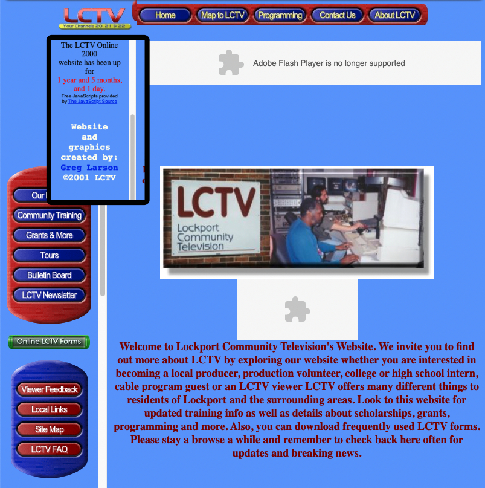

My first website for work built in early 2000 (post Y2K...we survived!) made with HotDog Web Editor, mustard not included. Optimized for Internet Explorer and Netscape Navigator at amazing resolution of 800x600 at 24bits. It used cookies to count the number of times someone visited a day and had an uptime counter. Hot Dog Web Editor Wiki HotDog Facebook Page (Still Active)
My second website for work built in 2001 (post Y2K...we survived!) made with Rapidweaver Web Editor. It featured an Adobe/Macromedia Flash Opening Animated Banner, some very nice navigation buttons, frames which were all the rage at that time and various early javascript plugins for counters. RapidWeaver Web Editor
Another redesign done in 2005 to coincide with a new logo we had designed. The site was streamlined for a sleeker look and frames were no longer in favor. Missing Flash components were still evident in these screenshots as were custom navigation buttons.
The final web design prior to moving to a wordpress template was again done with RapidWeaver in 2010. This version incorporated our first streaming live video 24/7 via an embeded windows media server. It also had social media integration although no team in place to support it. It had Google calendar integration that included adding our training dates to your calendar. It also featured Paypal integration for payments for goods and services. vbrick Streaming Solutions
{kind=link}
{kind=link}
{kind=link}
{kind=link}